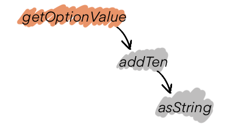
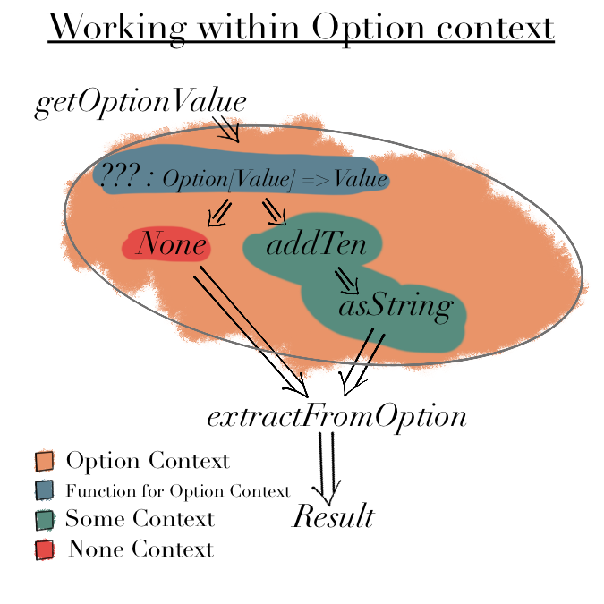

FP for Sceptics: Introduction to Option Type
Functional Programming (FP) is based around mathematical concepts like Type Theory - We define our system in terms of ADTs, data flow & functions1.
We first implement "Happy Path" and then implement handlers for "Unhappy Path" (error handling). In ADTs in Practice we used "Exceptions" (IO.raiseError) for error handling.
However FP promotes using types for error handling, such as:
OptionEitherMonad- etc.
In this post we will start by looking at the simplest of these:
Optiontype denotes presence (Some(value)) or absence (None) of a value.

In programming, we use functions and methods to do any action and return a value2. Depending upon the logic we may or may not have a return value.
Imperative Programming Languages (Java, Python etc) express this using either null or an Exception.
In Functional programming we can use Option type to say the value may exist.
Is this practical? Consider retrieving a value from a HashMap or a Dictionary.
val hMap: Map[Int, Int] = Map(1 -> 102, 2 -> 202, 3 -> 302) hMap.get(100) // What should be the value here? // `100` does not exist in `hMap`
In non-FP languages, we need to do null check or have exception handling around hMap.get.
In FP languages, hMap.get will return an Option and depending upon the flow of the program, we have two ways of dealing with it:
- Extract value
- Work within Option context
Extract value
This is useful when we want to directly work with a value, whether it exists or not.
There are two ways to extract a value from an Option
- getOrElse
- Pattern Matching
getOrElse
This is idiomatic in Scala and similar function/method is available in other imperative languages as well.
def getFromOption(opt: Option[String]): String = "Got Value: " + opt.getOrElse("None") getFromOption(Some("100")) // "Got Value: 100" getFromOption(None) // "Got Value: None"
Pattern Matching
Pattern Matching is the "functional way" of extracting a value.3
def extractFromOption(opt: Option[String]): String = opt match { case None => "Got Value: " + "None" case Some(value) => "Got Value: " + value } extractFromOption(Some("100")) // "Got Value: 100" extractFromOption(None) // "Got Value: None"
What about .get?
Option type also has .get method but it is unsafe to use as None.get will throw an exception and we want to avoid running into such errors.
Note:
Optionensures that we will never run intoNullPointerException(NPE) thanks to.getOrElse& pattern matching4.
Work within Option context
This is useful when we want to work with an
Optiontype without extracting the value at every turn, which will get cumbersome.
Consider the flow:

which is defined by the following functions
val hMap: Map[Int, Value] = Map( 1 -> Value(102), 2 -> Value(202), 3 -> Value(302) ) def getOptionValue(i: Int): Option[Value] = hMap.get(i) def addTen(i: Value): Value10 = Value10(i.value + 10) def asString(num: Value10): String = s"${num.value}" case class Value(value: Int) extends AnyVal case class Value10(value: Int) extends AnyVal
There are two ways of working within Option context

Using map to compose our functions
mapis useful when a function in the chain returns anOptionand rest of functions need to be executed only if function's input is available.
def mapOpt(i: Int): Option[String] = getOptionValue(i) .map(addTen) .map(asString) extractFromOption(mapOpt(3)) // "Got Value: 312" extractFromOption(mapOpt(100)) // "Got Value: None" def extractFromOption(opt: Option[String]): String = opt match { case None => "Got Value: " + "None" case Some(value) => "Got Value: " + value }
Using for-comprehension or flatMap5
for-comprehension(andflatMap) are useful when multiple functions in the chain returnOptionand but we only want to execute the next function if function's input is available.
// Using for-comprehension def forOpt(i: Int): Option[String] = for { value <- hMap.get(i) val10 <- Option.apply(addTen(value)) str <- Option.apply(asString(val10)) } yield str // Using flatMap def flatMapOpt(i: Int): Option[String] = getOptionValue(i) .flatMap(valOpt => Option.apply(addTen(valOpt))) .flatMap(val10 => Option.apply(asString(val10))) // for-comprehension extractFromOption(forOpt(3)) // "Got Value: 312" extractFromOption(forOpt(100)) // "Got Value: None" // flatmap extractFromOption(flatMapOpt(3)) // "Got Value: 312" extractFromOption(flatMapOpt(100)) // "Got Value: None" def extractFromOption(opt: Option[String]): String = opt match { case None => "Got Value: " + "None" case Some(value) => "Got Value: " + value }
Note: The code is a straightforward to read because we need not check for
Noneat every step.
Conclusion
In this post we looked at Option type - what, how & why to use it.
We saw how it:
- Elegantly handles possible
nullcases so that we don't run intoNullPointerExceptionor similar issues. - Makes code declarative/functional to read.
In my next post I will cover where, when and to what extent Option type is useful in practical applications.
Code
Complete code can be found at: Gist 9554bf80cf98aede3304faa190db2938
-
For sake of simplicity we are ignoring mutablity and impure functions. ↩
-
Pattern Matching is quite versatile as we will see in case of
Either. I plan on writing a separate post about its versatility. ↩ -
The caveat is that if we have
Option[None]then we risk NPE at next level. HoweverOption[None]is a code smell and needs to be fixed. ↩ -
If you are unfamiliar with how
flatMaporfor-comprehensionworks, you can ignorefor-comprehensionfor now. I will be coveringmap/flatMapin a future post. ↩